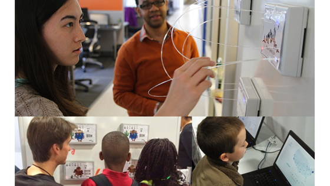

Science of complex biological systems
Aaron N. Brooks / PhD
Home
About me
CV
Twitter
Github
LinkedIn
Blog

Some stuff
2008-2014
PhD @ Institute for Systems Biology and University of Washington
Baliga lab
2002-2007
BS and BA @ University of New Mexico
Yo